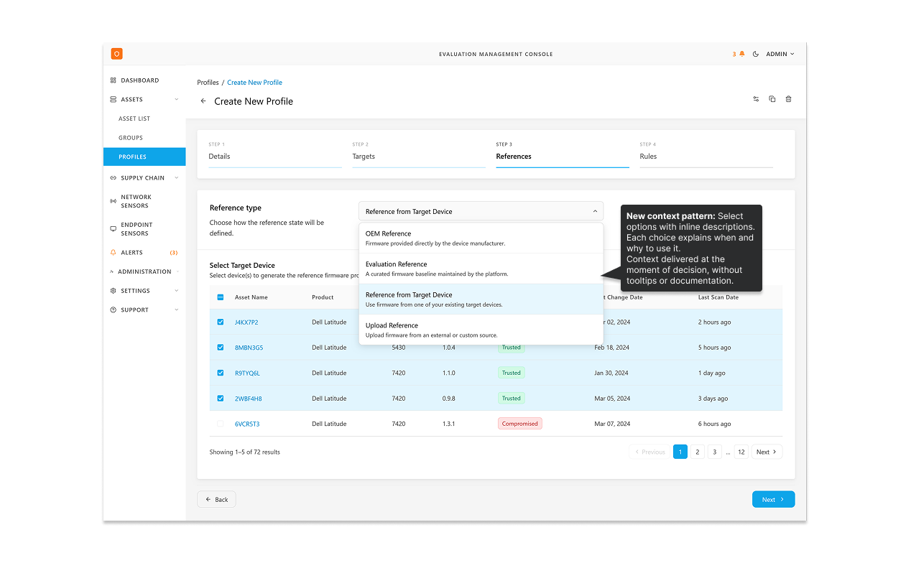

Step 3 defines the expected state to compare against.
Four reference types cover manufacturer defaults, platform
baselines, existing devices, and custom uploads.
Configuration and Evaluation Output
The presentation layer in the UI was designed to mirror the comparison model directly.
Configuration followed a step-based flow that made each comparison decision explicit: selecting targets, choosing
references, and defining rules. This structure allowed administrators to reason clearly about how comparisons were defined
and to configure them with confidence.
The evaluation output followed the same structure. Instead of a single pass or fail indicator, users could drill down to
see which elements were evaluated, expected versus observed values, and where evaluation was limited. Because the
structure had symmetry with configuration, non-admin users could understand and act on the output without needing
additional explanation, even when they were not part of setup.
This shared structure reduced reliance on external resources and made the capability
usable across different roles, from administrators defining comparisons to operators reviewing outcomes.